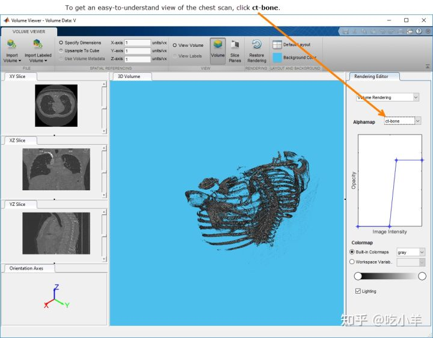
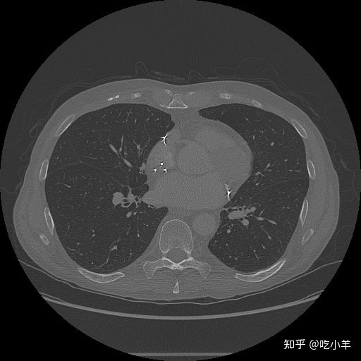
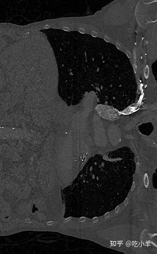
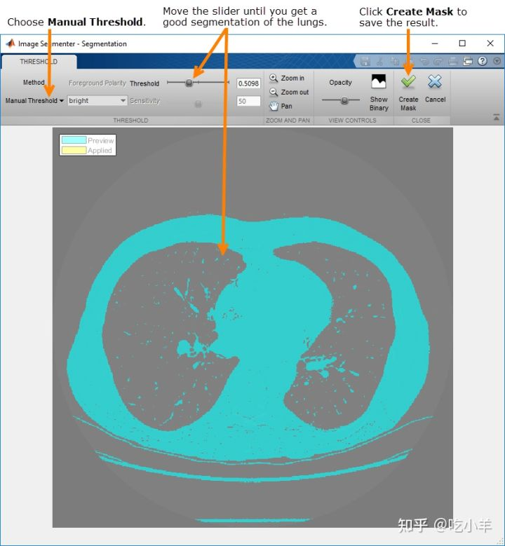
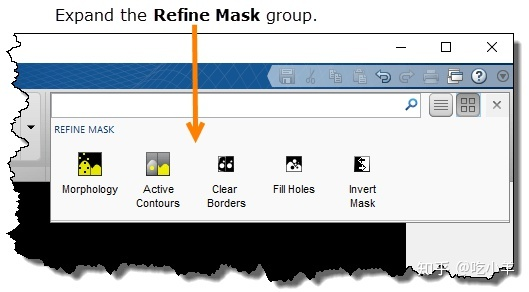
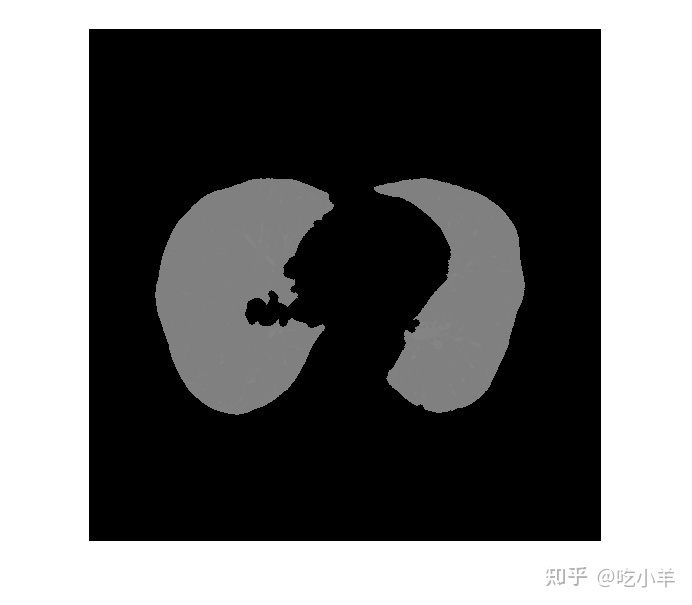
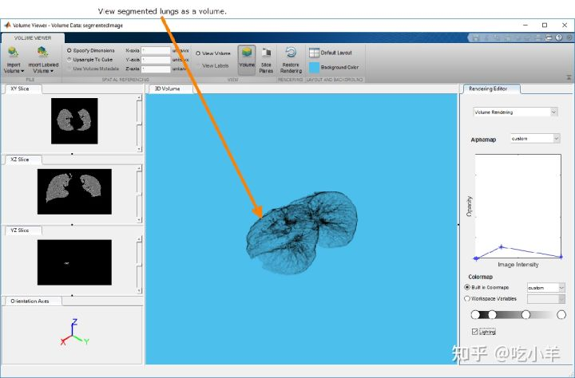

Home
本示例显示如何使用活动轮廓（蛇）执行 3-D 分割。您可以使用 Volume Viewer 应用程序查看结果。
准备数据
将人体胸部 CT 扫描数据加载到工作区中。要运行此示例，您必须使用 Add-On Explorer 从 MathWorks™ 下载示例数据。
load chestVolume whos Name Size Bytes Class Attributes V 512x512x318 166723584 int16
将 CT 扫描数据从int16到single将值归一化到范围 [0, 1]。
V = im2single(V);
使用 Volume Viewer 应用程序查看胸部扫描。从 MATLAB® Apps 工具条打开 App。您还可以通过使用volumeViewer命令并将音量指定为参数来打开应用程序：volumeViewer(V)。Volume Viewer 具有预设的 alphamap，旨在提供某些类型数据的最佳视图。要获得胸部扫描的最佳视图，请选择ct-bone预设。

分割肺
使用主动轮廓技术在 CT 扫描数据中分割肺部。活动轮廓是一种区域增长算法，需要初始种子点。该示例使用 Image Segmenter 应用程序通过分割两个正交 2-D 切片来创建此种子蒙版，一个在 XY 平面中，另一个在 XZ 平面中。该示例然后将这两个分段插入到 3-D 蒙版中。该示例将此蒙版传递给activecontour函数以创建胸腔中肺部的 3D 分割。（此示例使用活动轮廓方法，但您可以使用其他分割技术来实现相同的目标，例如洪水填充。）
在 XY 和 XZ 维度中提取中心切片。
XY = V(:,:,160); XZ = squeeze(V(256,:,:));
使用imshow函数查看二维切片。
figure imshow(XY,[],'Border','tight');

imshow(XZ,[],'Border','tight');

您可以在 Image Segmenter 应用程序中执行分割。从 MATLAB Apps 工具条打开 App 或使用imageSegmenter命令，将二维切片指定为参数imageSegmenter(XY).
要开始分割过程，请单击阈值以在阈值选项卡中打开肺切片。在阈值选项卡上，选择手动阈值选项并移动阈值滑块以指定实现肺良好分割的阈值。单击Create Mask以接受阈值并返回 Segmentation 选项卡。

该应用程序执行以下代码来对图像进行阈值处理。
BW = XY > 5.098000e-01;
在此初始肺分割后，使用Refine Mask菜单上的选项清理蒙版。

在应用程序中，您可以单击每个选项来反转蒙版图像，使肺部处于前景（反转蒙版），去除肺部以外的其他分割元素（清除边界），并填充肺部分割内的孔（填充孔） . 最后，使用Morphology选项平滑肺分割的边缘。在 Morphology 选项卡上，选择Erode Mask操作。执行这些步骤后，选择Show Binary并将蒙版图像保存到工作区。
该应用程序执行以下代码来优化蒙版。
BW = imcomplement(BW);
BW = imclearborder(BW);
BW = imfill(BW, 'holes');
radius = 3;
decomposition = 0;
se = strel('disk',radius,decomposition);
BW = imerode(BW, se);
maskedImageXY = XY;
maskedImageXY(~BW) = 0;
imshow(maskedImageXY)

对 XZ 切片执行相同的操作。使用加载图像，选择XZ变量。使用阈值对肺部进行初始分割。对于 XZ 切片，全局阈值选项会创建足够的分段（imbinarize以下代码中的调用）。与 XY 切片一样，使用Refine Mask菜单上的选项创建肺部的抛光分割。在 Morphology 选项卡上的腐蚀操作中，指定半径 13 以移除小的无关对象。
为了分割 XZ 切片并完善结果，应用程序执行以下代码。
BW = imbinarize(XZ);
BW = imcomplement(BW);
BW = imclearborder(BW);
BW = imfill(BW,'holes');
radius = 13;
decomposition = 0;
se = strel('disk',radius,decomposition);
BW = imerode(BW, se);
maskedImageXZ = XZ;
maskedImageXZ(~BW) = 0;
imshow(maskedImageXZ)
使用 activecontour 创建 种子蒙版 并分割肺图像
创建 3-D 种子蒙版，您可以将其与activecontour函数一起使用以分割肺。 创建一个与输入体积相同大小的逻辑 3-D 体积，在适当的空间位置插入mask_XY和mask_XZ。
mask = false(size(V)); mask(:,:,160) = maskedImageXY; mask(256,:,:) = mask(256,:,:)|reshape(maskedImageXZ,[1,512,318]);
使用此 3-D 种子蒙版，使用活动轮廓方法在 3-D 体积中分割肺部。此操作可能需要几分钟时间。要获得高质量的分割，使用histeq在可用范围内传播体素值。
V = histeq(V); BW = activecontour(V,mask,100,'Chan-Vese'); segmentedImage = V.*single(BW);
您可以通过运行命令volumeViewer(segmentedImage)，在 Volume Viewer 应用程序中查看分割的肺。通过在渲染编辑器中操作 alphamap 设置，您可以获得肺部的良好视图。

计算分割肺的体积
使用带有'volume'选项的函数regionprops3来计算肺的体积。
volLungsPixels = regionprops3(logical(BW),'volume');
指定从原始文件元数据收集的x、y和z维度中体素的间距。从 Add-On Explorer 下载的图像数据中不包含元数据。
spacingx = 0.76; spacingy = 0.76; spacingz = 1.26*1e-6; unitvol = spacingx*spacingy*spacingz; volLungs1 = volLungsPixels.Volume(1)*unitvol; volLungs2 = volLungsPixels.Volume(2)*unitvol; volLungsLiters = volLungs1 + volLungs2 volLungsLiters = 5.7726
======================================================================
我的测试结果及程序
下面是我测试的代码：

注：本文根据MATLAB官网内容修改而成。